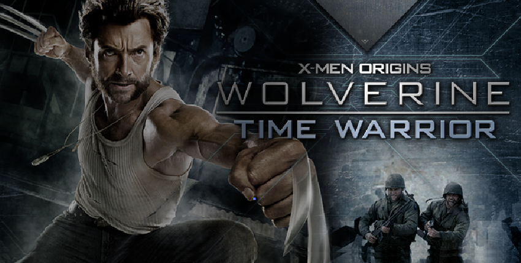

game trailerobjectives
to build an online game in conjunction with the release of the wolverine origins movie. this was the only online game released by the studio, aside from the console version of the wolverine franchise.
role + responsibilities
creative director
- lead game designer for the UI Design
- led a team of developers, artists and producer over the entire course of the project
deliverables in this role includes game document (incl. play mechanic, level design, character atributes, etc.), motion script, and early game world sketches.
client
12th century fox | usa
deliverables
- flash-based pre-rendered online 3D games
- three linear missions with corresponding story lines that took place prior to the movie timeline of the Wolverine character
2009 W3 Awards | Best Show in Games
. . . . .
#trigger, #shanghai, #losangeles, #VideoGames, #CreativeDirection, #ux, #wires, #IA, #GameFlow, #GameMechanic, #storyline
. . . . .